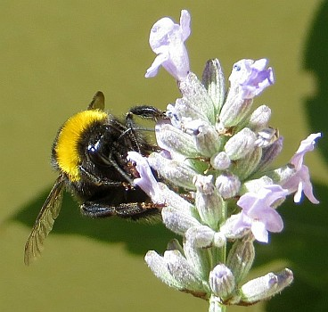

Un membre des Etats vint à la boutique l'aut'e jour pour acater un almonas, et ch'tait mé qu'eut l'honneur de l'servi.
Comme i' m'pathaissait d'mauvaise humeur par sus tchiquechose j'êprouvi à l'sonder un mio.
Ou n'm'avez pas la mîne justement comme d'amor, Moussieu" j'li dis, "che ne sait pas par chance qu'ou vos n'allez avez la rouogeule!"
"J'espéthe bain qu'nan," qu'i m'raîponni, "mais je n'sis pas content!
"Tch'est qu'i' peut y aver don?" j'li d'mandi.
"Eh bain, ch'est chennechin. Je sis l'arrièthe comme tout avec man travas et j'aithais voulu, dechu biau temps-là, avé resté siez-nous à s'mer man gouaîno à la pliaiche de m'en v'nin en ville, passer une matinée à êcouter deux Recteurs distchuter des bourdons. Je n'sais tch'est qui s'sa la préchaine chose!"

"Mais," j'li dis, "ch'est tout pour votre bain chenna, pensez don si les bourdons d'Jèrri v'naient à contracter la maladie de lus couôsins de l'Ile de Huit, tch'est qu'ou féthiez pour aver du myi pour vos adouochi la gorge quand ous avez fait vos longs discours dans la Chambre? Et pis, avous caltchulé les conséquences néfastes qui pouorraient s'dêvelopper dans l'cas qu'ou sèthiez pitchi par un bourdon qui s'sait atteint par chute peste-là? Quand à mé, je voudrais vaie nos messieux porter lus législation biaucoup pus liain. Je voudrais vaie des Inspecteurs de nommés qui s'saient stationnés de bord et d'autre attouo des côtes de l'île, avec châtchun lus p'tit dranet sus l'but d'un bâton, comme les siens qui happent des papillotes, et qui lus f'thaient un d'vé de happer tout bourdon suspect qui cherchethait à atterrer ichin, pour ensuite l'enfrumer ès Abattoirs pour un mais d'quarantaine, souos la surveillance du Vétérinaithe des Etats qui n'le r'mettrait en liberté qu'opprès s'être asseuthé qu'il 'tait franc de toute maladie, et qui li don'nait un certificat à ch't êffet-là. Comme ch'la, nou garantithait que tout l'myi qui s'sait fait en Jêrri aithait 'té manufactuthé que par des bourdons de la pus haute respectabilité. Et che s'sait tout pour le bénéfice de la population insulaithe, criyous pon?"
"Caouain," qu'i' m'dit, "tu raisonnes comme un philosophe, tu dév'thais réellement être dans l's Etats!"
Caouain
20/2/1920
Viyiz étout:
{kind=link}